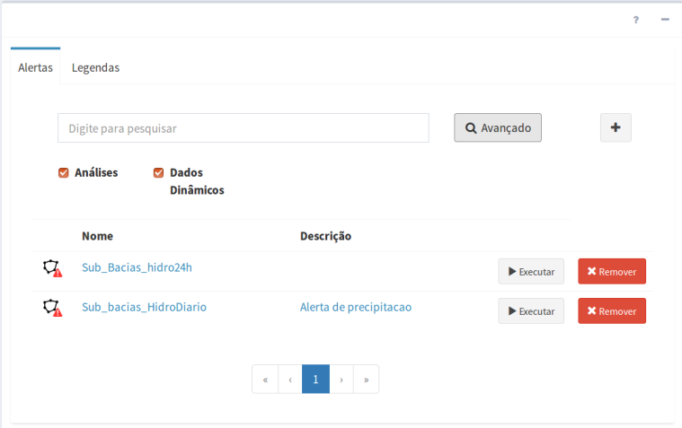

Alertas
Os alertas são utilizados para publicar dados dinâmicos matriciais e dados dinâmicos resultado de análises, isto é, análises baseadas em objeto monitorado, PCD e Grades. Resumidamente, temos que:
- Nome de alerta é único para cada projeto do TerraMA2 e estará disponível no item correspondente a alertas no “Módulo de Monitoramento”.
- Um alerta utiliza dois serviços. Um serviço de alerta para envio de notificações e geração de boletins em PDF e um serviço de visualização para publicar um alerta com legenda associada. Neste serviço de visualização é o utilizado o aplicativo Geoserver.
- Uma alerta deve ter obrigatoriamente uma legenda previamente definida e associada.
- Várias legendas podem ser definidas em um projeto.
- Uma legenda pode ser utilizada por vários alertas.
- Os níveis de alerta de uma legenda têm de ser numéricos e definidos em ordem crescente de criticidade.
A Figura 4.6 mostra a área de trabalho do menu “Alertas” com a lista de alertas e legendas disponíveis. Nesta área é possível selecionar um alerta ou legenda para fazer alguma edição, criar um alerta ou legenda ou ainda remover uma existente. Veja a seguir as opções de manipulação.

Figura 4.6 – Módulo de Administração: lista de alertas e legendas.
Como há uma dependência entre o alerta e a legenda, descrevemos inicialmente a manipulação de legendas.
LEGENDA DO ALERTA
Uma legenda pode ser utilizada para vários alertas. Os nomes e valores da legenda podem ser editados na aba de “Legenda” ou na aba de “Alertas”. Veja a seguir os procedimentos para adicionar uma legenda.
ADICIONAR UMA LEGENDA:
Para adicionar uma nova legenda é necessário ter um projeto ativo. No menu de opções selecione “ Alertas” para que a lista de alertas e legendas sejam apresentadas na área de trabalho. Clique na aba “Legendas” e em seguida no botão “ + “ para adicionar nova legenda. Após preencher todos os campos utilize o botão “Salvar”. Não é permitido nomes de legendas em duplicidade, assim como os níveis da legenda e os valores devem ser definidos em ordem crescente de criticidade. Utilize o botão “Remover” para apagar o item da legenda desejado. Botão “Cancelar” volta à tela anterior sem salvar a legenda. Detalhes de como adicionar uma legenda de um alerta aqui.
Alertas” para que a lista de alertas e legendas sejam apresentadas na área de trabalho. Clique na aba “Legendas” e em seguida no botão “ + “ para adicionar nova legenda. Após preencher todos os campos utilize o botão “Salvar”. Não é permitido nomes de legendas em duplicidade, assim como os níveis da legenda e os valores devem ser definidos em ordem crescente de criticidade. Utilize o botão “Remover” para apagar o item da legenda desejado. Botão “Cancelar” volta à tela anterior sem salvar a legenda. Detalhes de como adicionar uma legenda de um alerta aqui.
REMOVENDO UM LEGENDA:
Para remover uma legenda de um projeto ativo clique no menu “ Alertas” para apresentar a lista de legendas na área de trabalho. Clique na aba “Legendas” e na linha correspondente a legenda desejada clique em “X Remover”. Clique o botão “OK” para confirmar remoção.
Nota: Uma legenda não pode ser removida se estiver sendo utilizada por um alerta.
ALERTAS
Passamos a descrever os procedimentos de manipulação de alertas.
ADICIONAR UM ALERTA:
Para adicionar um novo alerta é necessário ter um projeto ativo. No menu de opções selecione “ Alertas” para que a lista de alertas e legendas sejam apresentadas na área de trabalho. Clique na aba “Alertas” e em seguida no botão “ + “ para adicionar novo alerta. Após preencher todos os campos utilize o botão “Salvar”. Não é permitido nomes de alertas em duplicidade. Botão “Cancelar” volta à tela anterior sem salvar o alerta. Detalhes de como adicionar um alerta aqui.
Alertas” para que a lista de alertas e legendas sejam apresentadas na área de trabalho. Clique na aba “Alertas” e em seguida no botão “ + “ para adicionar novo alerta. Após preencher todos os campos utilize o botão “Salvar”. Não é permitido nomes de alertas em duplicidade. Botão “Cancelar” volta à tela anterior sem salvar o alerta. Detalhes de como adicionar um alerta aqui.
EDITANDO UMA ALERTA:
Para editar um alerta previamente criado, é necessário que um usuário esteja conectado, o serviço de alerta iniciado e um projeto ativo. No menu de opções selecione “ Alertas” para que a lista disponível seja apresentada na área de trabalho. Clique sobre o nome ou descrição do alerta desejado para abrir as propriedades. Faça as alterações desejadas e utilize o botão “Salvar” para salvar. Botão “Cancelar” volta à tela anterior sem salvar alterações.
Alertas” para que a lista disponível seja apresentada na área de trabalho. Clique sobre o nome ou descrição do alerta desejado para abrir as propriedades. Faça as alterações desejadas e utilize o botão “Salvar” para salvar. Botão “Cancelar” volta à tela anterior sem salvar alterações.
EXECUTANDO UMA VISUALIZAÇÃO:
Para executar um alerta selecione “ Alertas” no menu de trabalho para que a lista disponível seja apresentada na área de trabalho. Na linha correspondente ao alerta desejado clique em
Alertas” no menu de trabalho para que a lista disponível seja apresentada na área de trabalho. Na linha correspondente ao alerta desejado clique em  Executar. Para acompanhar se o alerta foi executado com sucesso clique “ Situação Atual” no menu de trabalho. Na edição de um alerta poderá ainda optar por salvar e executar a publicação do alerta.
Executar. Para acompanhar se o alerta foi executado com sucesso clique “ Situação Atual” no menu de trabalho. Na edição de um alerta poderá ainda optar por salvar e executar a publicação do alerta.
ATIVANDO OU DESATIVANDO UM ALERTA:
Para ativar ou desativar um alerta clique em “ Alertas” no menu de opções e na área de trabalho clique sobre o botão
Alertas” no menu de opções e na área de trabalho clique sobre o botão  (ativado) ou (desativado) no item correspondente. Alertas deixam de ser publicadas no Módulo de Monitoramento na posição desativado. Ao selecionar um alerta qualquer, na seção “Dado Geral” o botão
(ativado) ou (desativado) no item correspondente. Alertas deixam de ser publicadas no Módulo de Monitoramento na posição desativado. Ao selecionar um alerta qualquer, na seção “Dado Geral” o botão  tem o mesmo efeito dos botões acima apresentados na lista de alertas.
tem o mesmo efeito dos botões acima apresentados na lista de alertas.
FILTRANDO ITENS NA LISTA DE ALERTAS:
Para filtrar itens na lista de alertas clique em “ Alertas” no menu de opções. Na área de trabalho no campo texto “Digite para pesquisar” digite o texto desejado. Note que todas as colunas disponíveis são utilizadas no filtro. Utilize o botão “ Avançado” para apresentar os botões referentes aos tipos de alertas e escolher os que deverão fazer parte da lista. Por padrão todos os tipos estarão selecionados. O filtro digitado e os botões de escolha do tipo de alertas são combinados para apresentar os itens da lista.
Avançado” para apresentar os botões referentes aos tipos de alertas e escolher os que deverão fazer parte da lista. Por padrão todos os tipos estarão selecionados. O filtro digitado e os botões de escolha do tipo de alertas são combinados para apresentar os itens da lista.
REMOVENDO UMA ALERTA:
Para remover um alerta clique em “ Alertas” no menu de opções para que a lista disponível seja apresentada. Na linha correspondente ao alerta desejado clique em “X Remover”. Clique o botão “OK” para confirmar remoção.
Alertas” no menu de opções para que a lista disponível seja apresentada. Na linha correspondente ao alerta desejado clique em “X Remover”. Clique o botão “OK” para confirmar remoção.
Nota: O alerta removido não pode ser recuperado. No Geoserver o “layer” correspondente também será removido.
IMPORTAR UM ALERTA:
Para importar um alerta clique no menu “ Projetos” para apresentar a lista de projetos disponíveis na área de trabalho, selecione o botão Importar. Clique em “
Projetos” para apresentar a lista de projetos disponíveis na área de trabalho, selecione o botão Importar. Clique em “ ”. Na janela apresentada, localize o diretório onde o alerta está salvo. Escolha o arquivo “*.terrama2”, clique em abrir e selecione o projeto para qual deseja importar os dados. Selecione o serviço e clique em importar. Nota: O nome do alerta deve ser único, caso possua algum registro com mesmo nome no projeto para qual o alerta será importada, não será possível realizar a importação.
”. Na janela apresentada, localize o diretório onde o alerta está salvo. Escolha o arquivo “*.terrama2”, clique em abrir e selecione o projeto para qual deseja importar os dados. Selecione o serviço e clique em importar. Nota: O nome do alerta deve ser único, caso possua algum registro com mesmo nome no projeto para qual o alerta será importada, não será possível realizar a importação.
EXPORTAR UM ALERTA:
Para exportar um alerta clique no menu “ Projetos” para apresentar a lista de projetos disponíveis na área de trabalho. Na frente do nome do projeto, selecione o botão exportar, clique em “
Projetos” para apresentar a lista de projetos disponíveis na área de trabalho. Na frente do nome do projeto, selecione o botão exportar, clique em “ ”. Uma janela será apresentada para selecionar que itens do projeto devem ser exportados. O padrão é exportar todo conteúdo, mas se desejar abra os itens do projeto com o botão “ + ” e marque ou desmarque o item desejado. Clique o botão “Exportar” para confirmar exportação dos itens marcados. No caso da exportação de um alerta todas as dependências associadas (dado dinâmico, análise e servidores) serão incluídas no arquivo exportado para um documento no formato JSON (Java Script Object Notation).
”. Uma janela será apresentada para selecionar que itens do projeto devem ser exportados. O padrão é exportar todo conteúdo, mas se desejar abra os itens do projeto com o botão “ + ” e marque ou desmarque o item desejado. Clique o botão “Exportar” para confirmar exportação dos itens marcados. No caso da exportação de um alerta todas as dependências associadas (dado dinâmico, análise e servidores) serão incluídas no arquivo exportado para um documento no formato JSON (Java Script Object Notation).